AI for Students Learn faster. Think deeper. Act ethically.
This site helps you harness AI effectively and responsibly across your studies — from first prompts to research and writing, with integrity at the core.
Tip: Treat AI like a study coach. Ask it to quiz you, explain your own notes back to you, and challenge your thinking — but always verify facts and citations.

Choose your pathway
Start with your goal — we'll guide you to the right resources.
🧭
Learn to use AI
Start here: core concepts, safe setup, first wins.
- Quick start checklist
- What AI can/can't do
- Model choices & costs
📚
Apply AI to study
Research & essays, revision, and workflow tools.
- Evidence-based prompting
- Cited research workflows
- Revision plans & quizzes
🛡️
Use AI responsibly
Clarity on policy, good practice, and common pitfalls.
- Traffic-light examples
- Fact-checking habits
- Avoiding hallucinations
Find a page fast
Press / to focus
Popular this week
The 10 principles of effective prompting
Practical techniques with examples you can paste.
NotebookLM for revision and research
Grounded answers with citations, plus audio overviews.
AI-powered study strategies
Turn passive reading into active learning.
Spot & avoid AI hallucinations
Verification habits for academic work.